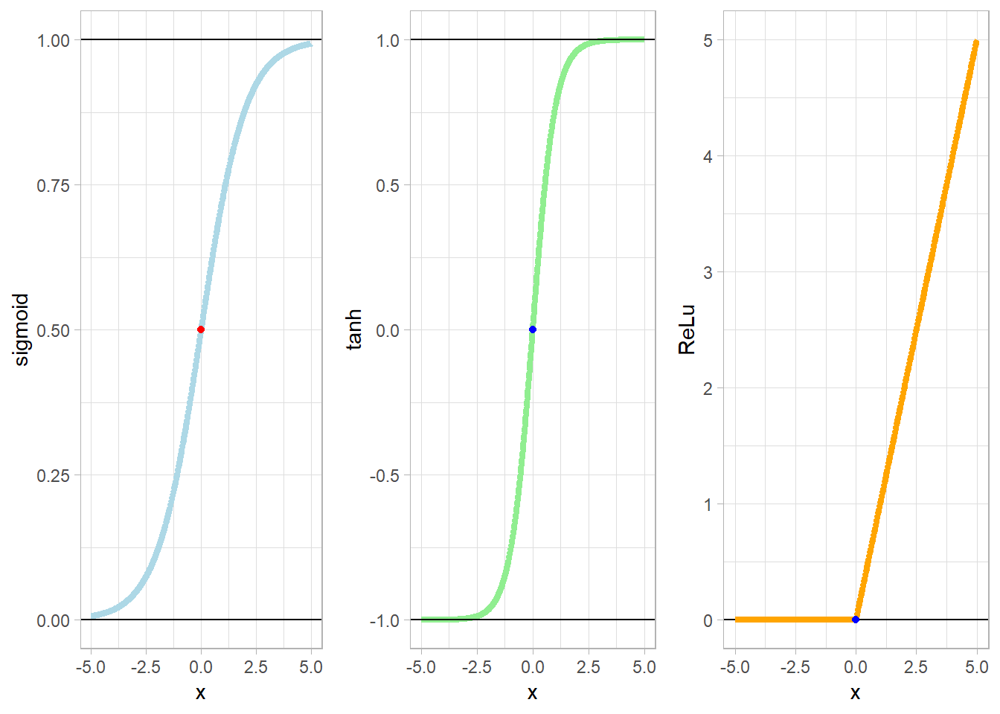

神经元及神经网络基础结构

图1. 神经元的组成（源自维基百科）
神经元这个图大多数理科生在高中生物课本都学过~神经网络则由许许多多的神经元所组成，通常一个神经元具有多个树突，主要用来接收消息；轴突只有一条，相当于我们定义的一个计算过程；而轴突尾部的许许多多轴突末梢，将传递信息给其他神经元。
图2. 神经网络基础结构
通常这里的非线性函数会用上各式各样的激活函数，比如Sigmoid函数，tanh函数和ReLu函数。
Sigmoid函数
\[f(z) = \frac{1}{1+e^{-z}}\] tanh函数
\[f(z) = \frac{e^z-e^{-z}}{e^z+e^{-z}}\] ReLu函数
\[f(z) = \max(0,z)\]

神经网络基础认知
我们把许多神经元组合起来就可以得到一个神经网络，由于有输入的数据和我们想得到的输出数据，便会有“输入层”（Input layer）和“输出层”（Output layer）；中间的神经元则组成了“隐藏层”（Hidden layer）。在下面图3中，输入层有3个神经元，隐藏层有4个神经元，输出层有2个神经元。在实际情况中，输入层和输出层通常是固定的，而隐藏层的层数和节点数则可以自由调节。图3. 神经网络基础层级结构
我们假设一个全连接的网络结构，其中隐藏层只有一层。另外，假设输入层和隐藏层之间的边的权值构成的矩阵为 \[ \left [ \begin{matrix} w_{11} & w_{12} & w_{13} \\ w_{21} & w_{22} & w_{23} \\ w_{31} & w_{32} & w_{33} \end{matrix} \right ] \] 其中，第一列的\(w_{11}, w_{21}, w_{31}\)代表的是输入层的点\(x_1\)分别连接隐藏层的三个节点的边的权值；第二列的\(w_{12}, w_{22}, w_{32}\)代表的是输入层的点\(x_2\)分别连接隐藏层的三个节点的边的权值；第三列的\(w_{13}, w_{23}, w_{33}\)代表的是输入层的点\(x_3\)分别连接隐藏层的三个节点的边的权值。
图中的“+1”点代表我们添加了一个值b，称其为偏置项。那么，隐藏层的节点可以由下计算得到： \[ \begin{align} a_1 = w_{11}\times x_1 + w_{12}\times x_2 + w_{13}\times x_3 + b_1\\ a_2 = w_{21}\times x_1 + w_{22}\times x_2 + w_{23}\times x_3 + b_2\\ a_3 = w_{31}\times x_1 + w_{32}\times x_2 + w_{33}\times x_3 + b_3 \end{align} \tag{1} \] 由于线性计算的表现能力比较差，所以考虑用非线性函数进行计算，即使用激活函数\(f(\cdot)\)（前面已提及）。（1）式可以变换为（2）式： \[ \begin{align} a_1 = f(w_{11}\times x_1 + w_{12}\times x_2 + w_{13}\times x_3 + b_1)\\ a_2 = f(w_{21}\times x_1 + w_{22}\times x_2 + w_{23}\times x_3 + b_2)\\ a_3 = f(w_{31}\times x_1 + w_{32}\times x_2 + w_{33}\times x_3 + b_3) \end{align} \tag{2} \] 将（2）式改写为矩阵运算形式（3）式： \[ \begin{align} \boldsymbol{a} = f \begin{pmatrix} \begin{pmatrix} w_{11},w_{12},w_{13}\\w_{21},w_{22},w_{23}\\w_{31},w_{32},w_{33} \end{pmatrix} \begin{pmatrix} x_1\\x_2\\x_3 \end{pmatrix} + \begin{pmatrix} b_1\\b_2\\b_3 \end{pmatrix} \end{pmatrix} = f(\boldsymbol{W}x+\boldsymbol{B}) \end{align} \tag{3} \]
图4. 简单全连接网络中层之间的计算方式
图5. 深度神经网络示意图
损失函数（Loss Function）
训练数据通常是一系列“输入-输出”数据对组成的集合，我们希望输入一个数据，尽可能与配对的输出数据相同。那么网络的输出结果和实际的真实结果差多少，我们需要一定数学形式进行量化，所以引入了损失函数（Loss Function）。常见的损失函数有以下几种：
0-1损失函数
如果预测值和真实值一样，则损失值为0；若不等，则为1；公式表达为： \[
L(y,f(x)) = \begin{cases}
1, & y = f(x)\\
0, & y \neq f(x)
\end{cases}
\]
绝对值损失函数（1-范数形式）
通过预测值和真实值之差的绝对值进行衡量，公式表达为： \[
L(y,f(x)) = |y-f(x)|
\]
均方误差损失函数（2-范数形式）
通过计算预测值和真实值之差的平方再求均值，可得到均方误差，公式表达为： \[
L(y,f(x)) = \frac{1}{n}\sum_{i=1}^n(y_i-f(x_i))^2
\]
优化算法
梯度下降法（Gradient Descent Method）
传统的梯度下降法是通过计算损失函数的一阶导数作为方向进行下降计算，计算方法可表示为： \[ W_{ij} = W_{ij} - \alpha\frac{\partial}{\partial W_{ij}}L(w,b)\\ b_i = b_i - \alpha\frac{\partial}{\partial b_i}L(w,b) \] 其中\(W_{ij}\)和\(b_i\)是需要优化的参数，\(L(w,b)\)是损失函数，\(\alpha\)在深度学习中通常称为学习率（learning rate），在机器学习或最优化计算领域中我们通常称为步长（stepsize）。
传统的梯度下降法需要计算\(n\)个梯度，即样本数量的梯度个数，在数据越来越大的时代，这会大大降低我们需要的计算速度，因此也产生了随机梯度下降（Stochastic gradient descent）这一类的方法。随机梯度下降通常随机选取某个样本并计算其相应导数，作为所有样本相同的导数进行计算，这种方法在实践上有不错的效果。当然，我们可以随机选取一小批样本，样本数量记为batch size，将batch size个样本的导数进行累加后求均值作为所有样本相同的导数，再进一步计算；这种方法我们称为小批量随机梯度下降法（mini-batch stochastic gradient descent）。
虽然梯度下降直接快速，但是也有一定的不足，由于我们需要选取stepsize，若stepsize太大，那可能无法达到优化问题的最优点；若stepsize太小，则收敛速度太慢，大大降低了模型训练速度。同时，不变的stepsize可能会使结果无法收敛到全局最优解，并可能停在局部最小值（局部最优解），当然很容易陷入到“鞍点”。
图6. “鞍点”示意图
Momentum优化器（Momentum Optimizer）
Momentum优化器也可称为基于动量的优化算法，其中参数的更新会根据梯度的变化而变化：动量再梯度连续指向同一方向上时会增加，而在梯度方向变化时会减小；这样可以更快地收敛并减少震荡。公式表示为： \[ v_t^{W} = \gamma \times v_{t-1}^{W} + \alpha \times \frac{\partial}{\partial W_{ij}}L(w,b)\\ W_{ij} = W_{ij} - v_t^{W}\\ v_t^{b} = \gamma \times v_{t-1}^{b} + \alpha \times \frac{\partial}{\partial b_i}L(w,b)\\ b_i = b_i - v_t^{b} \] 其中，\(\gamma\)是动量更新值，通常取0.9。这样，基于Momentum的随机梯度下降可以更快地收敛，并减少陷入局部最优点的概率。
Adagrad优化器（Adaptive Gradient Optimizer）
Momentum优化器虽然加速了参数的更新并加速收敛，但存在缺点是没有对不同的参数进行区别对待。Adagrad优化器则基于这样的梯度优化思想：根据参数自适应地更新学习率（也为步长stepsize），对于不频繁更新的参数做较大更新，而对于频繁更新的参数做较小的更新。
Adagrad对于每个参数\(\theta_{t,i}\)，在每个时间点\(t\)使用不同的学习率。首先我们先考虑Adagrad的单参数情况，为了公式形式的整洁，我们记各个时间点\(t\)的参数\(\theta_{t,i}\)下的目标函数梯度为\(g_{t,i}\)： \[g_{t,i} = \frac{\partial}{\partial \theta_{t,i}}L(\theta_{t,i})\] 在Adagrad的更新规则中，我们会根据每个时间点\(t\)对每个参数\(\theta_{t+1,i}\)基于上次已经计算过的梯度\(\theta_{t,i}\)来修改步长： \[\theta_{t+1,i} = \theta_{t,i} - \frac{\alpha}{\sqrt{G_{t,ii}+\epsilon}}\times g_{t,i}\] 其中，\(G_{t,ii}\in R^{d\times d}\)，\(G_{t,ii}\)是一个对角矩阵，其对角元素\(t\)时刻参数\(\theta_{t,i}\)的梯度平方和，\(\epsilon\)是一个光滑项，防止分母为0，通常取1e-8级别的数。另外，\(\alpha\)使用默认值0.01。Adagrad有个缺点就是其分母实际上累积了梯度的平方，会使得步长（学习率）越来越小。
Adadelta优化器
Adadelta是对Adagrad的改进，通过用过去计算的梯度平方的均值代替单纯的累加梯度平方，可以避免一味地降低步长。
\(t\)时刻的梯度平方均值表示为： \[ E[g^2]_{t,i} = \gamma\times E[g^2]_{t-1,i} + (1-\gamma)\times g_{t,i}^2 \] 其中，\(\gamma\)和前面提到的Momentum优化器中的\(\gamma\)类似，通常取0.9。将累积梯度平方更改为梯度平方均值，可得到： \[\theta_{t+1,i} = \theta_{t,i} - \frac{\alpha}{\sqrt{E_t+\epsilon}}\times g_{t,i}\] 另外，我们还想要变换分子的\(\gamma\)，将\(\gamma\)改为\(\sqrt{E[\Delta\theta^2]_t+\epsilon}\)，便得到Adadelta的计算形式，以上内容可以总结为： \[ E[g^2]_{t,i} = \gamma\times E[g^2]_{t-1,i} + (1-\gamma)\times g_{t,i}^2\\ E[\Delta\theta^2]_{t,i} = \gamma\times E[\Delta\theta^2]_{t-1,i} + (1-\gamma)\times \Delta\theta_{t,i}^2\\ \theta_{t+1,i} = \theta_{t,i} - \frac{\sqrt{E[\Delta\theta^2]_{t-1,i}+\epsilon}}{\sqrt{E[g^2]_{t,i}+\epsilon}}\times g_{t,i} \] 显然，我们不再需要提前设定步长了。
Adam优化器（Adaptive Moment Estimation Optimizer, Adam Optimizer）
Adam也是个人名，圣经中说他是世上的第一个人类也是第一个男人，接着和夏娃结为夫妻，过上了幸福的生活…跑远了！回正题！其实Adam的全称中文是自适应矩估计，它不仅像Adadelta一样存储过去梯度平方\(v_t\)的平均值之外，还保留了像Momentum一样的保留了过去梯度\(m_t\)，其计算公式为： \[ m_t = \beta_1m_{t-1} + (1-\beta_1)g_t\\ v_t = \beta_2v_{t-1} + (1-\beta_2)g_t^2 \] 由于\(m_t\)和\(v_t\)在计算上会存在偏差，所以进行了偏差校正： \[ \hat{m_t} = \frac{m_t}{1-\beta_1^t}\\ \hat{v_t} = \frac{v_t}{1-\beta_2^t} \] Adam的更新规则： \[\theta_{t+1} = \theta_t - \frac{\alpha}{\sqrt{\hat{v_t}+\epsilon}}\times \hat{m_t}\] 其中，\(\beta_1\)通常取0.9，\(\beta_2\)通常取0.999，\(\epsilon\)通常取1e-8。大多实验表明，Adam比其他自适应学习算法表现更优。
算法表现效果

图7. 不同优化器的随机梯度下降法在鞍点处的不同表现
注：动图来源于Sebastian Ruder的文章，由Alec Radford制作。
- 题外话（跳过这段吧~）
在整理学习优化算法的时候，发现一件有趣的事。我边看着《Tensorflow入门与实战》的第四章边学习优化算法，同时网上边找找资料帮助理解。然而有趣的是我找到了一位业界大神Sebastian Ruder的主页，并看到了他在2016年1月6日写下了An overview of gradient descent optimization algorithms。看着看着我发现手中拿的书竟然是电脑屏幕上显示的文章的中文版，我便好奇地寻找手中这本实战书的出版时间 —— 2018年2月17日。怪哉怪哉~再翻翻书，发现并无任何引用。算了，回归主题！（Reference选了日期比较前的S.R.大佬的文章作为引用）
反向传播算法（Backpropagation）
反向传播算法是目前用来训练人工神经网络（Artificial Neural Network，ANN）的最常用且最有效的算法。首先我们先定义变量：
- \(v_i^{(l)}\)：第\(l\)层的第\(i\)个节点的输入值，\(v_i^{(l)} = \sum_{j=0}^n w_{ij}^{(l)}a_j^{(l-1)} + b_i^{(l)}\)；
- \(a_i^{(l)}\)：第\(l\)层的第\(i\)个节点的输出值，\(a_i^{(l)} = f(v_i^{(l)})\)，其中\(f(\cdot)\)是激活函数；
- \(w_{ij}^{(l)}\)：第\(l-1\)层的第\(j\)个节点到第\(l\)层的第\(i\)个节点的权值；
- \(b_i^{(l)}\)：第\(l\)层计算第\(i\)个节点的输入值时的偏置项的值；
- \(K\)：神经网络的总层数；
- \(f(\cdot)\)：激活函数，例如sigmoid函数，tanh函数或者ReLu函数；
- \(L(w,b)\)：整体损失函数，常用的损失函数为\(\frac{1}{2n}\sum_{i=1}^n(y_i-f(x_i))^2\)，其中n是样本的个数。
反向传播计算过程的细节如下所示：
参数初始化
随机初始化网络中的各层的参数\(w_{ij}^{(l)}\)和\(b_i^{(l)}\)，且满足\(N(0,\ 0.01)\)分布的随机数；- 前向传播
以图3中隐藏层的第一个节点（从上往下数第一个）为例，对于这个节点而言，其输入信号为： \[v_1^{(2)} = a_1^{(1)}\times w_{11}^{(2)} + a_2^{(1)}\times w_{12}^{(2)} + a_3^{(1)}\times w_{13}^{(2)} + b_1^{(2)}\]
同理，我们可以得到该层的其他节点的计算： \[ v_2^{(2)} = a_1^{(1)}\times w_{21}^{(2)} + a_2^{(1)}\times w_{22}^{(2)} + a_3^{(1)}\times w_{23}^{(2)} + b_2^{(2)}\\ v_3^{(2)} = a_1^{(1)}\times w_{31}^{(2)} + a_2^{(1)}\times w_{32}^{(2)} + a_3^{(1)}\times w_{33}^{(2)} + b_3^{(2)}\\ v_4^{(2)} = a_1^{(1)}\times w_{41}^{(2)} + a_2^{(1)}\times w_{42}^{(2)} + a_3^{(1)}\times w_{43}^{(2)} + b_4^{(2)}\\ \]
若用矩阵形式进行表达： \[V^{(2)} = A^{(1)}\times W^{(2)} + B^{(2)}\] 其中， \[ V^{(2)} = (v_1^{(2)}, v_2^{(2)}, v_3^{(2)}, v_4^{(2)})\\ A^{(1)} = (a_1^{(1)}, a_2^{(1)}, a_3^{(1)})\\ W^{(2)} = \begin{pmatrix} w_{11}^{(2)} & w_{21}^{(2)} & w_{31}^{(2)} & w_{41}^{(2)}\\ w_{12}^{(2)} & w_{22}^{(2)} & w_{32}^{(2)} & w_{42}^{(2)}\\ w_{13}^{(2)} & w_{23}^{(2)} & w_{33}^{(2)} & w_{43}^{(2)} \end{pmatrix}\\ B^{(2)} = (b_1^{(2)}, b_2^{(2)}, b_3^{(2)}, b_4^{(2)}) \]
再经过激活函数（非线性函数）变换后得到： \[A^{(2)} = f(V^{(2)})\]
同理，经由 \[ V^{(3)} = A^{(2)}\times W^{(3)} + B^{(3)}\\ A^{(3)} = f(V^{(3)}) \] 可以得到最终输出。
- 反向传播
首先对于最后一层节点的偏导数，其实我们很容易得到，我们定义神经网络总共有\(K\)层，对于最后一层即第\(K\)层（输出层），根据偏导数的定义：
\[ \begin{align} \delta_i^{(K)} =&\ \frac{\partial}{\partial v_i^{(K)}}L(w,b)\\ =&\ \frac{\partial L(w,b)}{\partial a_i^{(K)}}\times \frac{\partial a_i^{(K)}}{\partial v_i^{(K)}}\\ =&\ \frac{\partial L(w,b)}{\partial a_i^{(K)}}\times f'(v_i^{(K)}) \end{align} \tag{4} \] 明显的是，\(a_i^{(K)}\)是最后一层（即输出层）的输出值，\(f'(v_i^{(K)})\)则是激活函数对\(v_i^{(K)}\)的导数。
对（4）式进一步推导可以得到： \[ \begin{align} \delta_i^{(K)} =&\ \frac{\partial}{\partial a_i^{(K)}}\Big[\frac{1}{2n_K}\sum_{j=1}^{n_K}\Big(y_j-a_j^{(K)}\Big)^2\Big]\times f'(v_i^{(K)})\\ =&\ -\frac{1}{n_k}(y_i-a_i^{(K)})\times f'(v_i^{(K)}) \end{align} \] 其中，\(y_i\)是样本对应的正确值，\(n_K\)是第K层节点个数。
因此，可得到最后一层（第K层）的计算公式： \[ \delta_i^{(K)} = -\frac{1}{n_k}(y_i-a_i^{(K)})\times f'(v_i^{(K)}) \tag{5} \]
那么对于第\(K-1\)层的偏导数，可以根据第\(K\)层的计算出来： \[ \begin{align} \delta_i^{(K-1)} =&\ \frac{\partial}{\partial v_i^{(K-1)}}L(w,b)\\ =&\ \frac{\partial}{\partial v_i^{(K-1)}}\Big[\frac{1}{2n_K}\sum_{j=1}^{n_K}\Big(y_j-a_j^{(K)}\Big)^2\Big]\\ =&\ \frac{1}{2n_K}\Big[\frac{\partial}{\partial v_i^{(K-1)}} \sum_{j=1}^{n_K}\Big(y_j-f(v_j^{(K)})\Big)^2\Big] \end{align} \tag{6} \]
利用连续函数的求导和求和顺序可互换，（6）式可以推得： \[ \begin{align} \delta_i^{(K-1)} =&\ -\frac{1}{n_K} \sum_{j=1}^{n_K} \Big[(y_j-f(v_j^{(K)}))\times \frac{\partial}{\partial v_i^{(K-1)}}f(v_j^{(K)})\Big]\\ =&\ -\frac{1}{n_K} \sum_{j=1}^{n_K} \Big[(y_j-f(v_j^{(K)}))\times \frac{\partial f(v_j^{(K)})}{\partial v_i^{(K)}}\times \frac{\partial v_i^{(K)}}{\partial v_i^{(K-1)}} \Big]\\ =&\ \sum_{j=1}^{n_K} \Big[-\frac{1}{n_K} (y_j-f(v_j^{(K)}))\times f'(v_j^{(K)})\times \frac{\partial v_i^{(K)}}{\partial v_i^{(K-1)}} \Big] \end{align} \]
联合（5）式，由（6）式可以得到： \[ \begin{align} \delta_i^{(K-1)} =&\ \sum_{j=1}^{n_K} \Big[ \delta_i^{(K)}\times \frac{\partial v_i^{(K)}}{\partial v_i^{(K-1)}} \Big]\\ =&\ \sum_{j=1}^{n_K}\Bigg[ \delta_i^{(K)}\times \frac{\partial }{\partial v_i^{(K-1)}}\Big[ \sum_{m=0}^{n_{K-1}}a_m^{(K-1)}\times w_{jm}^{(K)}+b_j^{(K)} \Big]\Bigg]\\ =&\ \sum_{j=1}^{n_K}\Bigg[ \delta_i^{(K)}\times \frac{\partial }{\partial v_i^{(K-1)}}\Big[ \sum_{m=0}^{n_{K-1}}f(v_m^{(K-1)})\times w_{jm}^{(K)}+b_j^{(K)} \Big]\Bigg]\\ =&\ \sum_{j=1}^{n_K}\Bigg[ \delta_i^{(K)}\times f'(v_i^{(K-1)})\times w_{ji}^{(K)} \Bigg]\\ =&\ \Bigg[\sum_{j=1}^{n_K}\Big[ \delta_i^{(K)}\times w_{ji}^{(K)} \Big]\Bigg] \times f'(v_i^{(K-1)}) \end{align} \]
因此，可得到第K-1层的计算公式： \[ \delta_i^{(K-1)} = \Bigg[\sum_{j=1}^{n_K}\Big[ \delta_i^{(K)}\times w_{ji}^{(K)} \Big]\Bigg] \times f'(v_i^{(K-1)}) \tag{7} \]
同理，用\(K-2\)替换\(K-1\)，用\(K-1\)替换\(K\)，则可计算第\(K-2\)层的偏导数。 \[ \delta_i^{(K-2)} = \Bigg[\sum_{j=1}^{n_{K-1}}\Big[ \delta_i^{(K-1)}\times w_{ji}^{(K-1)} \Big]\Bigg] \times f'(v_i^{(K-2)}) \tag{7} \]
同样的，可以根据（7）式计算得到网络中所有节点的偏导数。
回归我们的参数迭代公式： \[ \begin{align} w_{ij}^{(l)} =&\ w_{ij}^{(l)} - \alpha\times \frac{\partial}{\partial w_{ij}^{(l)}}L(w,b)\\ b_i^{(l)} =&\ b_i^{(l)} - \alpha\times \frac{\partial}{\partial b_i^{(l)}}L(w,b) \end{align} \tag{8} \]
对于后面的偏导数部分，我们可以加以处理，对于参数\(w_{ij}^{(l)}\)部分： \[ \begin{align} \frac{\partial L(w,b)}{\partial w_{ij}^{(l)}} =&\ \frac{\partial L(w,b)}{\partial v_i^{(l)}}\times \frac{\partial v_i^{(l)}}{\partial w_{ij}^{(l)}}\\ =&\ \delta_i^{(l)}\times \frac{\partial v_i^{(l)}}{\partial w_{ij}^{(l)}}\\ =&\ \delta_i^{(l)}\times \frac{\partial }{\partial w_{ij}^{(l)}}\Big[\sum_{j=0}^{n_{l-1}}a_j^{(l-1)}\times w_{ij}^{(l)}+b_i^{(l)}\Big]\\ =&\ \delta_i^{(l)}\times a_j^{(l-1)} \end{align} \]
对于参数\(b_i^{(l)}\)部分： \[ \begin{align} \frac{\partial L(w,b)}{\partial b_i^{(l)}} =&\ \frac{\partial L(w,b)}{\partial v_i^{(l)}}\times \frac{\partial v_i^{(l)}}{\partial b_i^{(l)}}\\ =&\ \delta_i^{(l)}\times \frac{\partial}{\partial b_i^{(l)}}\Big[\sum_{j=0}^{n_{l-1}}a_j^{(l-1)}\times w_{ij}^{(l)}+b_i^{(l)}\Big]\\ =&\ \delta_i^{(l)} \end{align} \]
因此，由（8）式可以推得 \[ \begin{align} w_{ij}^{(l)} =&\ w_{ij}^{(l)} - \alpha\times \delta_i^{(l)}\times a_j^{(l-1)}\\ b_i^{(l)} =&\ b_i^{(l)} - \alpha\times \delta_i^{(l)} \end{align} \tag{8} \]
Over！反向传播算法到此结束！